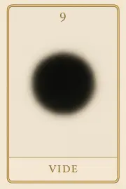
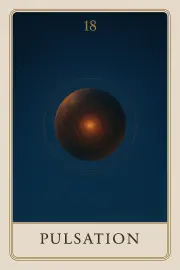
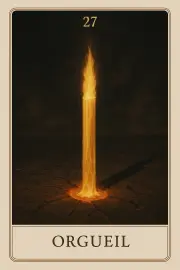
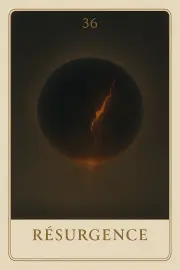
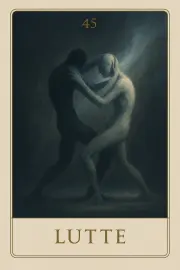
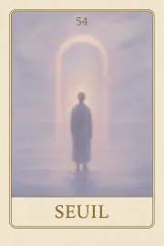
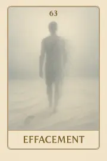
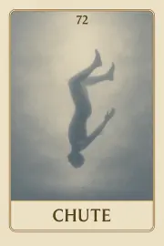
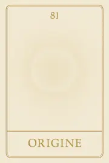

Famille 9 – Sia (Planète inconnue)
Carte 9 – Vide
Mots-clés : lâcher-prise radical, déconstruction de soi, traversée du vide, dépouillement intérieur, état d’entre-deux
Chiffre caché : 171
Lecture inversée : 1 → 7 → 1
Divinité principale : Sia
Planète secondaire : Soleil
Divinité secondaire : Râ
Interprétation de la carte 9 : Vide (droite)
Lecture intuitive rapide
Ce n’est pas un manque. Ce n’est pas une absence. C’est un état pur, débarrassé de toute forme connue. Tu ne peux plus t’accrocher à ce que tu croyais être. Il n’y a rien à sauver ici. Rien à comprendre. Seulement un espace ouvert, où ce que tu étais n’a plus sa place, et où ce qui vient ne s’est pas encore montré. Ce n’est pas confortable. C’est exact.
1. Caractère de la personne
Tu n’as plus rien à défendre. Plus de forme à tenir. C’est l’instant où l’ancien toi se dissout, et où rien de nouveau ne vient combler ce silence. Ce n’est pas une perte, c’est une naissance sans image.
2. Plan affectif
Tu ne sais plus ce que tu ressens. Et c’est juste. Tu sors d’une logique de lien, d’attente, de rôle. Ici, rien ne t’attend. Et pourtant, tu es plus proche de toi-même que jamais.
5. Plan spirituel
Le divin ne te parle pas. Il respire à travers ce qui n’est plus là. Le Vide est sa première réponse. Il te prépare, sans t’expliquer, à recevoir sans chercher.
Carte 9 : Vide (inversée)
1. Caractère de la personne
Tu refuses de lâcher. Tu veux que quelque chose reste, que le vide soit comblé, même artificiellement. Mais plus tu remplis, moins tu existes.
2. Plan affectif
Tu cherches à maintenir un lien, alors qu’il est déjà tombé. Ce vide n’est pas un échec, mais une libération. Tu confonds l’absence avec le manque, mais ce que tu es n’a besoin de personne pour exister.
5. Plan spirituel
Tu appelles une présence. Mais elle ne vient pas. Parce que la vraie présence commence dans le vide. C’est l’épreuve de l’invisible, et l’esprit s’y reconnaît sans témoin.
Résumé de la carte 9 : Vide
Vide est le passage sans passage. Il ne te transforme pas. Il te défait. Et dans cette déconstruction silencieuse, ce que tu es vraiment, trouve enfin l’espace pour exister.
Carte 18 – Pulsation
Mots-clés : : retour du vivant, battement intérieur, frémissement de l’être, vibration préconsciente, réveil énergétique
Chiffre caché : 225
Lecture inversée : 5 → 2 → 2
Divinité principale : Sia
Planète secondaire : Terre
Divinité secondaire : Geb
Interprétation de la carte 18 : Pulsation (droite)
Lecture intuitive rapide
Le Vide ne dure pas. Même dans le silence le plus profond, une vibration recommence à battre. Tu ne sais pas ce que c’est. Tu ne sais pas d’où ça vient. Mais c’est là. Une pulsation sourde, vitale, irrépressible. Ce n’est pas une idée, ni une intention : c’est une évidence intérieure, préconsciente, vivante.
1. Caractère de la personne
Quelque chose en toi recommence à bouger. Tu ne l’as pas décidé. Ce n’est pas un choix : c’est une évidence. La vie revient, comme un battement ancien, et tu dois juste l’écouter.
2. Plan affectif
Ce n’est pas un sentiment. Ce n’est pas une émotion. C’est plus profond. C’est une présence intérieure rythmique, qui t’appelle à ressentir sans expliquer.
5. Plan spirituel
Tu sors du Vide. Rien n’est encore clair, mais la vibration est là. Elle ne dit rien, mais elle tire vers la densité. Tu n’as rien à comprendre : seulement à rester avec ce battement.
Carte 18 : Pulsation (inversée)
1. Caractère de la personne
Tu sens quelque chose en toi, mais tu l’ignores. Tu veux que tout soit clair avant de bouger. Pourtant, cette pulsation n’a pas besoin de sens : elle est déjà vivante.
2. Plan affectif
Tu veux nommer ce que tu ressens, mais cela n’a pas encore de forme. Tu dois d’abord reconnaître le battement brut, le frémissement sans direction.
5. Plan spirituel
Tu refuses de sortir du Vide, par peur de reprendre forme. Mais la vie revient. Ce n’est pas une volonté : c’est un appel de l’intérieur, et il te faudra y répondre.
Résumé de la carte 18 : Pulsation
Pulsation est la carte de la vie qui revient sans forme, sans mot, sans pensée. Après le Vide, une énergie rythmique commence à battre, comme un cœur de matière vivante. Elle ne demande rien. Elle dit simplement : “Tu es encore là. Et tu bats.”
Carte 27 – Orgeuil
Mots-clés : : faux renouveau, redressement précipité, lumière prématurée, besoin de prouver, ego blessé en reconstruction
Chiffre caché : 189
Lecture inversée : 9 → 8 → 1
Divinité principale : Sia
Planète secondaire : Jupiter
Divinité secondaire : Amon-Rê
Interprétation de la carte 27 : Orgeuil (droite)
Lecture intuitive rapide
Tu es passé par une fin. Quelque chose en toi s’est effondré, s’est dissous, a touché l’inconnu. Mais avant même d’en sortir transformer, tu as déjà voulu te redresser, nommer, reconstruire. Tu veux que ça ait du sens. Tu veux que la chute ait produit un feu. Mais c’est trop tôt. Tu te tiens debout par orgueil de tenir, pas encore par vérité de l’être. Et cette posture, aussi noble soit-elle, te coupe du fond que tu n’as pas encore traversé.
1. Caractère de la personne
Tu veux montrer que tu t’es relevé. Que tu as compris. Que tu es passé par l’épreuve. Mais ce que tu tiens est une image reconstruite, pas encore une vérité. Et tu le sais, au fond.
2. Plan affectif
Tu offres une nouvelle version de toi. Tu veux qu’on voie ton renouveau. Mais ce feu que tu montres n’est pas encore né de l’intérieur. Il vient d’un besoin de prouver que tu n’as pas disparu.
5. Plan spirituel
Tu crois renaître. Tu veux affirmer que le vide t’a traversé, que tu as vu la mort et que tu es revenu. Mais cette lumière est prématurée. Elle vient de l’orgueil de survivre, pas encore d’une réelle transmutation.
Carte 27 : Orgeuil (inversée)
1. Caractère de la personne
Tu refuses de rester au sol. Tu veux déjà faire sens, bâtir, projeter une nouvelle forme. Mais ce redressement rapide est une fuite. Tu veux briller alors que tu as à disparaître encore.
2. Plan affectif
Tu montres que tu es revenu. Tu veux qu’on voie que tu as changé. Mais tu n’es pas encore revenu à toi. Ce que tu offres est une silhouette construite par orgueil blessé, pas par feu retrouvé.
5. Plan spirituel
Tu veux incarner le passage. Mais tu ne l’as pas encore traversé. Tu portes la posture du sage avant d’avoir vécu l’effacement complet. L’orgueil se glisse dans le costume de la renaissance.
Résumé de la carte 27 : Orgeuil
Orgueil est la carte du redressement trop rapide. Tu veux montrer que tu as traversé l’épreuve, mais tu refuses encore de t’y abandonner. Elle dit : “Le vide te réclame encore. Ne construis pas ta lumière avant qu’elle ne t’ait vraiment brûlé.”
Carte 36 – Résurgence
Mots-clés : : renaissance intérieure, feu transformateur, retour d’une force oubliée, mutation inévitable, fin d’une illusion identitaire
Chiffre caché : 234
Lecture inversée : 4 → 3 → 2
Divinité principale : Sia
Planète secondaire : Mars
Divinité secondaire : Sekhmet
Interprétation de la carte 36 : Résurgence (droite)
Lecture intuitive rapide
Tu croyais avoir fini. Tu pensais que c’était derrière toi, que tu avais tout brûlé. Mais une force revient. Elle monte de plus bas que toi. Ce n’est pas un retour, c’est une percée. Tu peux résister — ou céder. Ce qui monte ne redescendra pas. Tu n’as plus à décider : tu as à renaître.
1. Caractère de la personne
Tu es traversé par un feu ancien. Ce n’est pas une mémoire : c’est un mouvement. Tu ressens une force en toi que tu ne contrôles pas. C’est une part oubliée de toi qui revient.
2. Plan affectif
Tu changes. L’ancien lien ne tient plus, l’ancien toi non plus. Tu ne peux plus faire semblant. Ce qui remonte veut vivre. Même si l’autre ne comprend pas.
5. Plan spirituel
Tu ressurgis. Pas pour redevenir, mais pour naître autrement. Ce feu n’est pas à fuir : il est ta forme neuve. Tu n’as plus à t’accrocher à l’ancien. Tu as déjà brûlé.
Carte 36 : Résurgence (inversée)
1. Caractère de la personne
Tu refuses de changer. Tu retiens ce qui monte. Tu as peur d’être traversé, peur de ce que cela détruirait. Mais ce que tu crois tenir est déjà en train de s’effondrer.
2. Plan affectif
Tu t’accroches à un lien mort, à une image figée. Tu sais que ça ne vit plus, mais tu restes. Tu confonds fidélité et peur. Tu refuses de renaître, et tu te figes.
5. Plan spirituel
Tu bloques ta propre mue. Tu ressens le feu, mais tu l’étouffes. Tu crois que le silence te sauvera. Mais ce feu, tu ne peux pas l’éteindre. Il te changera — avec ou sans toi.
Résumé de la carte 36 : Résurgence
Résurgence est la carte de la renaissance inévitable. Elle ne demande pas ton accord. Elle ne cherche pas à plaire. Elle monte, elle traverse, elle transforme. Elle dit : “Tu n’es plus celui que tu croyais. Tu n’as plus à devenir : tu es en train de revenir. Résister, c’est souffrir. Laisser passer, c’est renaître.”
Carte 45 – Lutte
Mots-clés : : crise de transformation, résistance intérieure, passage identitaire, tension entre l’ancien et le nouveau, naissance empêchée
Chiffre caché : 243
Lecture inversée : 3 → 4 → 2
Divinité principale : Sia
Planète secondaire : Mercure
Divinité secondaire : Thot
Interprétation de la carte 45 : Lutte (droite)
Lecture intuitive rapide
Tu veux te dire autrement. Tu veux poser une nouvelle version de toi. Mais l’ancienne forme résiste. Elle parle encore à travers ta voix. Elle agit encore dans ton geste. Et tu refuses de plier. Tu veux que ce soit maintenant, que ce soit clair, que ce soit dit. Mais la vérité ne se force pas. Elle se traverse.
1. Caractère de la personne
Tu veux affirmer ce que tu deviens. Mais tu te heurtes à ce que tu as été. La tension est réelle. Et elle fait partie de la naissance.
2. Plan affectif
Tu veux montrer ton vrai visage. Mais l’autre ne te reconnaît pas. Ce n’est pas un rejet : c’est un signal. Il reste encore un masque à tomber.
5. Plan spirituel
Tu t’opposes à ta propre mue. Tu veux forcer le passage. Mais la lutte n’accélère pas la transformation. Elle la retarde.
Carte 45 : Lutte (inversée)
1. Caractère de la personne
Tu refuses le passage. Tu te bats contre la forme ancienne — mais tu la portes encore. Le nouveau toi n’a pas encore de sol.
2. Plan affectif
Tu veux qu’on voie qui tu es devenu. Mais tu n’es pas encore clair avec toi-même. Et ce doute crée la confusion dans le lien.
5. Plan spirituel
Tu t’épuises à vouloir avancer plus vite que ton dépouillement. Mais ce n’est pas une course. C’est une traversée. Et tu ne peux pas tricher.
Résumé de la carte 45 : Lutte
Lutte est la carte de la crise intérieure au cœur du changement. Tu veux poser ton nouveau visage, mais l’ancien ne lâche pas si facilement. Et ce que tu prends pour un mur… est peut-être juste le dernier écho de ce que tu n’as pas encore laissé mourir. Elle dit : “Tu n’as pas à forcer ce que tu deviens. Tu as à t’effacer, juste assez, pour que cela puisse naître.”
Carte 54 – Seuil
Mots-clés : : passage intérieur, entre-deux symbolique, transformation silencieuse, mutation de soi, vide sacré
Chiffre caché : 216
Lecture inversée : 6 → 1 → 2
Divinité principale : Sia
Planète secondaire : Vénus
Divinité secondaire : Hathor
Interprétation de la carte 54 : Seuil (droite)
Lecture intuitive rapide
Tu n’es plus là d’où tu viens. Mais tu n’es pas encore arrivé. Tu es entre deux formes, deux noms, deux vérités. Ce n’est pas une perte. C’est un passage. Un seuil. C’est là que tout peut recommencer. À condition de ne rien emporter de l’ancien par peur du vide. Le seuil ne demande pas d’élan. Il demande présence.
1. Caractère de la personne
Tu ne cherches plus à revenir en arrière. Tu ne veux plus forcer la suite. Tu t’installes dans ce qui vient, même s’il n’a pas encore de nom.
2. Plan affectif
Tu n’es plus ce que tu étais dans le lien. Mais tu n’es pas encore celui ou celle qui peut aimer autrement. Et ce lieu fragile, tu apprends à l’habiter sans te juger.
5. Plan spirituel
Tu es à l’endroit exact où rien ne tient, mais où tout peut naître. Ce n’est pas une épreuve. C’est un espace sacré.
Carte 54 : Seuil (inversée)
1. Caractère de la personne
Tu refuses le vide. Tu veux contrôler la transformation. Mais c’est cette résistance qui t’empêche de passer.
2. Plan affectif
Tu tiens encore l’ancien, même s’il est fini. Et ce lien, devenu souvenir, t’empêche d’aimer vraiment ce qui vient.
5. Plan spirituel
Tu veux renaître sans perdre ce que tu as été. Mais tant que tu n’as pas traversé le seuil du non-savoir, tu tournes en rond.
Résumé de la carte 54 : Seuil
Seuil est la carte de la mutation silencieuse. Elle ne parle pas encore de ce que tu vas devenir, mais de ce que tu cesses d’être. Elle désigne un point précis, fragile, sacré : celui où l’ancien se tait, et où le nouveau n’a pas encore parlé. Elle dit : “Tu es entre deux mondes. Ne force pas le passage. Reconnais simplement que tu y es.”
Carte 63 – Effacement
Mots-clés : : disparition intérieure, fin d’un cycle, mue symbolique, libération silencieuse, renaissance par le vide
Chiffre caché : 198
Lecture inversée : 9 → 8 → 1
Divinité principale : Sia
Planète secondaire : Saturne
Divinité secondaire : Osiris
Interprétation de la carte 63 : Effacement (droite)
Lecture intuitive rapide
Ce que tu es en train de vivre n’est pas une perte. C’est une disparition nécessaire. Ce n’est plus le moment d’ajouter, de chercher, d’affirmer. C’est le moment de laisser partir ce qui ne tient plus, ce qui n’est plus vrai, ce qui ne t’appartient déjà plus. Il ne s’agit pas d’un adieu tragique, mais d’un effacement juste, silencieux, comme le sable que la mer reprend.
1. Caractère de la personne
Tu te défais. Ce n’est pas un effondrement : c’est une mue. Tu sens que tu ne peux plus tenir certaines postures, que certaines façons d’être s’effacent — et tu les laisses partir.
2. Plan affectif
Tu t’éloignes d’anciens liens, ou ils s’éloignent de toi. Mais ce n’est pas un rejet. C’est une libération. Le silence que tu ressens contient une vérité plus grande.
5. Plan spirituel
L’effacement est un passage sacré. Il ne détruit pas : il prépare la place pour ce qui vient. Mais il faut oser ne plus être — avant de pouvoir renaître.
Carte 63 : Effacement (inversée)
1. Caractère de la personne
Tu t’accroches à une image, à une forme de toi-même qui est déjà en train de disparaître. Tu veux rester visible, mais ce que tu es devient invisible… et vrai.
2. Plan affectif
Tu ressens une disparition, une distance, un vide. Mais ce vide ne vient pas d’un autre. C’est une zone de transition — entre ce que tu croyais aimer, et ce qui t’attend.
5. Plan spirituel
Tu refuses de te laisser effacer. Mais cette résistance te coupe de la naissance. Ce n’est qu’en disparaissant que tu deviendras.
Résumé de la carte 63 : Effacement
Effacement est la carte de la disparition juste. Elle ne parle pas de perte, ni de défaite, mais de renoncement profond, de fin naturelle d’un cycle intérieur. Elle t’invite à ne pas t’agripper à ce qui meurt — car c’est en t’effaçant que tu redeviens source. Elle dit : “Ce que tu perds n’est pas enlevé. C’est ce que tu n’es plus qui s’en va — pour que tu puisses enfin naître.”
Carte 72 – Chute
Mots-clés : : lâcher-prise radical, effondrement intérieur, dépouillement de soi, fin des repères, ouverture au renouveau
Chiffre caché : 207
Lecture inversée : 7 → 0 → 2
Divinité principale : Sia
Planète secondaire : Uranus
Divinité secondaire : Maât
Interprétation de la carte 72 : Chute (droite)
Lecture intuitive rapide
Tu ne tiens plus. Ou plutôt : tu ne peux plus tenir. Ce qui t’a soutenu jusqu’ici n’opère plus. Il n’y a pas de repère, pas de forme, pas de sol. Tu tombes. Lentement. Intérieurement. Ce n’est pas une punition. C’est un dépouillement absolu, un lâcher-prise que rien ne retient. Et au fond de ce vide… quelque chose commence à vibrer. Pas encore un lien, pas encore une réponse — juste une possibilité.
1. Caractère de la personne
Tu es en perte de contrôle. Mais cette perte est juste. Tu ne peux plus retenir l’ancien toi — ni définir le prochain. La chute n’est pas une destruction, c’est une libération de l’image.
2. Plan affectif
Le lien semble s’effondrer ou se dissoudre. Mais ce n’est pas l’autre qui te quitte : c’est l’ancien schéma relationnel qui cède. Tu dois laisser le vide se faire.
5. Plan spirituel
Tu touches le sol invisible. Là où il n’y a plus de structure, ni d’appui. Et c’est là — précisément là — que tu peux renaître.
Carte 72 : Chute (inversée)
1. Caractère de la personne
Tu refuses de tomber. Mais tu ne tiens déjà plus. Et plus tu résistes, plus la douleur augmente. Tu dois lâcher. Et te laisser dépouiller.
2. Plan affectif
Tu cherches à retenir un lien qui n’a plus de base. Tu appelles, tu insistes… mais la chute est intérieure. Et seul ton abandon peut ramener la clarté.
5. Plan spirituel
Tu es suspendu dans le vide, mais ce n’est pas une punition. C’est une chambre intérieure, où tout ce qui est faux s’effondre. Ce n’est qu’après… que tu sentiras à nouveau la terre.
Résumé de la carte 72 : Chute
Chute est la carte du lâcher-prise extrême, de la désintégration des anciennes structures. Elle n’annonce pas une fin brutale, mais une traversée du vide. Ce n’est pas une chute vers le bas : c’est un effondrement sacré, destiné à révéler un autre lien. Elle dit : “Ce n’est pas la fin. C’est le moment où tout ce que tu n’es pas… tombe. Pour que tu puisses enfin commencer.”
Carte 81 – Origine
Mots-clés : : retour à l’essence, présence nue, fin des identités, point d’émergence, vérité silencieuse
Chiffre caché : 180
Lecture inversée : 0 → 8 → 1
Divinité principale : Sia
Planète secondaire : Planète inconnue
Divinité secondaire : Sia
Interprétation de la carte 81 : Origine (droite)
Lecture intuitive rapide
Ce n’est pas une fin. Ce n’est même pas un commencement. C’est ce qu’il reste quand tout a disparu — sauf ce que tu es vraiment. Tu ne portes plus de nom, plus d’histoire, plus de forme. Et pourtant, tu es là. Ce n’est pas le vide. C’est ce qui permet tout. Ce n’est pas le début. C’est le lieu d’où tout peut naître.
1. Caractère de la personne
Tu ne défends plus rien. Tu ne prouves plus rien. Tu es là. Présent à ce que tu es. Et cela suffit.
2. Plan affectif
Il n’y a plus de rôle à tenir, plus de masque à porter. Si un lien doit naître, il naîtra à partir de là : ton centre nu.
5. Plan spirituel
Tu es arrivé au seuil. Le voile est tombé. Il ne reste que l’essence, silencieuse, intacte. C’est là que commence le vrai chemin.
Carte 81 : Origine (inversée)
1. Caractère de la personne
Tu veux tourner la page, mais tu refuses de poser le livre. Tu cherches le nouveau, mais tu n’as pas quitté l’ancien. Ce passage demande une reddition totale.
2. Plan affectif
Tu veux un lien vrai, mais tu viens encore avec ton histoire. Tu dois te délester. Tant que tu ramènes le passé, tu n’es pas disponible.
5. Plan spirituel
Tu touches le seuil, mais tu recules. Ce n’est pas la peur qui t’arrête : c’est le refus d’abandonner ce que tu crois être. Ce que tu es… n’a pas besoin d’histoire.
Résumé de la carte 81 : Origine
Origine est la carte du retour à l’essence, après tous les masques, toutes les luttes, tous les cycles. Elle ne parle pas d’un nouveau départ : elle parle du point sans forme d’où tout peut émerger, si tu ne t’accroches plus à rien. Elle dit : “Ce que tu es ne commence pas. Il est. Ce n’est pas un rôle. C’est une présence.”